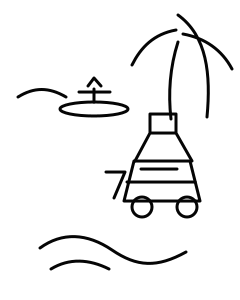

TU RUTA
CÁDIZ
en Camper
Playas infinitas, atardeceres únicos y libertad sobre ruedas.
PLANIFICA TU RUTA →
RUTAS DESTACADAS
Ver todas
COSTA DE LA LUZ7 días · 6 noches+120 km

CÁDIZ SURF TRIP5 días · 4 noches+90 km

PUEBLOS BLANCOS6 días · 5 noches110 km